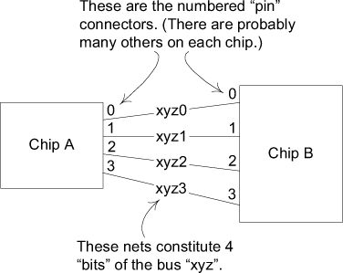
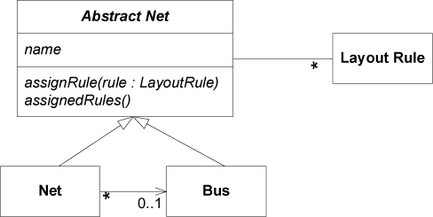

Ch 3: Binding Model and Implementation
星盤: 手持宇宙模型，用以計算天體位置。(參考: wiki - 星盤)
Example: From Procedural to MODEL-DRIVEN

- Chip A 有四個 pin，分別為 0, 1, 2, 3
- 透過 xyz0, xyz1, xyz2, xyz3 這四條 net 連接到另一個 chip B 的四個 pin 0, 1, 2, 3
- xyz0, xyz1, xyz2, xyz3 構成 bus
A Mechanistic Design

A Model-Driven Design

public static void assignBusRule(String busName, String ruleType,
double parameter) {
Bus bus = BusRepository.getByName(busName).orElseThrow();
bus.assignRule(new LayoutRule(ruleType, parameter));
}
@SneakyThrows
public static void main(String[] args) {
Collection<Net> nets = NetListImport.read(new File("net_list.txt"));
NetRepository.addAll(nets);
Collection<Bus> buses = InferredBusFactory.groupIntoBuses(nets);
BusRepository.addAll(buses);
List<String> lines = Files.readAllLines(new File("bus_rules.txt").toPath());
lines.subList(2, lines.size()).forEach(line -> {
String[] parts = line.split("\\s+");
assignBusRule(parts[0], parts[1], Double.parseDouble(parts[2]));
});
NetRuleExport.write(new File("net_rules.txt"), NetRepository.allNets());
}
@Test
void testBusRuleAssignment() {
Net a0 = new Net("a0");
Net a1 = new Net("a1");
Bus a = new Bus("a"); // Bus is not conceptually dependent
a.addNet(a0); // on name-based recognition, and so
a.addNet(a1); // its tests should not be either.
LayoutRule minWidth4 = new LayoutRule(MIN_WIDTH, 4);
a.assignRule(minWidth4);
assertThat(a0.getAssignedRules()).contains(minWidth4);
assertThat(a0.getRule(MIN_WIDTH)).isEqualTo(minWidth4);
assertThat(a1.getRule(MIN_WIDTH)).isEqualTo(minWidth4);
}
abstract class AbstractNet {
private final Set<LayoutRule> rules = new HashSet<>();
public void assignRule(LayoutRule rule) {
rules.add(rule);
}
public Set<LayoutRule> getAssignedRules() {
return rules.stream().collect(Collectors.toUnmodifiableSet());
}
}
@RequiredArgsConstructor
@Getter
@ToString
class Bus extends AbstractNet {
private final String name;
private final List<Net> nets = new ArrayList<>();
public void addNet(Net net) {
net.setBus(this);
nets.add(net);
}
}
@RequiredArgsConstructor
@Setter
@Getter
@ToString(exclude = "bus")
class Net extends AbstractNet {
private final String name;
private Bus bus;
@Override
public Set<LayoutRule> getAssignedRules() {
return Stream.concat(
super.getAssignedRules().stream(),
bus.getAssignedRules().stream()
).collect(Collectors.toUnmodifiableSet());
}
public Optional<LayoutRule> getRule(String ruleName) {
return getAssignedRules()
.stream()
.filter(rule -> rule.getName().equals(ruleName))
.findFirst();
}
}
@Getter
@RequiredArgsConstructor
class LayoutRule {
private final String name;
private final double value;
}
class NetRepository {
private static final Collection<Net> nets = new ArrayList<>();
private NetRepository() {
}
public static void addAll(Collection<Net> nets) {
NetRepository.nets.addAll(nets);
}
public static Collection<Net> allNets() {
return List.copyOf(nets);
}
}
class BusRepository {
private static final Collection<Bus> buses = new ArrayList<>();
private BusRepository() {
}
public static Optional<Bus> getByName(String busName) {
return buses.stream().filter(bus -> bus.getName().equals(busName)).findFirst();
}
public static void addAll(Collection<Bus> buses) {
BusRepository.buses.addAll(buses);
}
}
class NetListImport {
private NetListImport() {
}
public static Collection<Net> read(File file) {
try {
List<String> lines = Files.readAllLines(file.toPath());
List<String> netsLines = lines.subList(2, lines.size());
return netsLines.stream().map(
line -> new Net(line.substring(0, line.indexOf(' ')))
).toList();
} catch (IOException e) {
throw new UncheckedIOException(e);
}
}
}
class InferredBusFactory {
private static final Pattern NET_NAME_PATTERN = Pattern.compile("(.+)(\\d+)");
private InferredBusFactory() {
}
public static Collection<Bus> groupIntoBuses(Collection<Net> nets) {
Map<String, Bus> busMap = new HashMap<>();
nets.forEach(net -> {
Matcher matcher = NET_NAME_PATTERN.matcher(net.getName());
if (matcher.find()) {
String busName = matcher.group(1);
if (!busMap.containsKey(busName)) {
busMap.put(busName, new Bus(busName));
}
busMap.get(busName).addNet(net);
}
});
return busMap.values();
}
}
class NetRuleExport {
private NetRuleExport() {
}
public static void write(File file, Collection<Net> nets) {
List<String[]> lineTokens = new ArrayList<>();
StringBuilder sb = new StringBuilder();
try {
nets.forEach(net -> net.getAssignedRules().forEach(
rule -> lineTokens.add(new String[] {
net.getName(), rule.getName(), String.valueOf(rule.getValue()),
})
));
int col1Width = Math.max(lineTokens.stream().map(tokens -> tokens[0].length())
.max(Integer::compareTo)
.orElse(0), "Net Name".length());
int col2Width = Math.max(lineTokens.stream().map(tokens -> tokens[1].length())
.max(Integer::compareTo)
.orElse(0), "Rule Type".length());
int col3Width = Math.max(lineTokens.stream().map(tokens -> tokens[2].length())
.max(Integer::compareTo)
.orElse(0), "Parameters".length());
sb.append(String.format("%-" + col1Width + "s %-" + col2Width + "s %-" + col3Width + "s\n",
"Net Name", "Rule Type", "Parameters"));
sb.append("-".repeat(col1Width))
.append(" ")
.append("-".repeat(col2Width))
.append(" ")
.append("-".repeat(col3Width))
.append("\n");
DecimalFormat df = new DecimalFormat("#.##");
lineTokens.forEach(tokens -> sb.append(
String.format("%-" + col1Width + "s %-" + col2Width + "s %-" + col3Width + "s\n",
tokens[0], tokens[1], df.format(Double.parseDouble(tokens[2])))));
Files.writeString(file.toPath(), sb.toString());
} catch (IOException e) {
throw new UncheckedIOException(e);
}
}
}
Net Name Component.Pin
-------- -------------
xyz0 A.0, B.0
xyz1 A.1, B.1
xyz2 A.2, B.2
Bus Name Rule Type Parameters
-------- ------------- ----------
xyz min_linewidth 5
xyz max_delay 15
Net Name Rule Type Parameters
-------- ------------- ----------
xyz0 min_linewidth 5
xyz0 max_delay 15
xyz1 min_linewidth 5
xyz1 max_delay 15
xyz2 min_linewidth 5
xyz2 max_delay 15
拼拼湊湊的版本，僅提供書本範例的一個示意。還有很大的改進空間，並撰寫對應的單元測試。
Example: 造成使用者混淆的 model
使用者認為 Internet Explorer 的書籤是一個網站名稱的清單，且在不同的 session 保持不變。但是，書籤被實作成一個包含 URL 的檔案，檔案名稱是書籤的名稱。因此，當書籤的名稱包含 Windows 檔名不允許的字元時，就會發生問題。 例如: 使用者新增書籤 "Laziness: The Secret to Happiness" 將看到錯誤訊息 "A filename cannot contain any of the following characters: / : * ? " < > |"。這會讓使用者困惑，filename 指得是什麼意思。另一種做法，應用程式可以默默地將不合法的字元清掉，雖然不會有太大的傷害，但這不是使用者期望的結果。
將 analysis model / user model 與 design model / implementation model 綁定在一起，可以避免這種情況。
如果書籤只是包含 URL 的檔案集合，使用者應該知道。使用者也可以因此利用他對檔案管理的概念管理書籤。
讓使用者了解 model，有助於讓他們發掘更多應用程式的潛能。